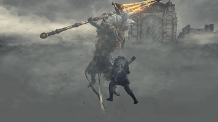

3D Game Programming and Design
(完善中……)

Homework 1
1.简答题
- 解释 游戏对象（GameObjects） 和 资源（Assets）的区别与联系。
- 游戏对象：游戏中的每个对象都是一个游戏对象。然而，游戏对象自己不做任何事。他们需要专有属性，才可以成为一个角色，一个环境，或一个特殊效果。游戏对象是一种容器。根据你要创建的对象性质，添加不同的组件组合到游戏对象中。想象一个游戏对象是一口锅，组件是不同的作料，它们构成了你的游戏食谱。游戏对象更加像是多个资源的整理合并起来的具体表现。
- 资源：游戏会用到的资源，比如，模型文件，贴图文件，声音文件，脚本文件等等。资源可以作为模板，可实例化成游戏中具体的对象。资源之中可以包含多个游戏对象的类别，当需要使用时可直接添加到场景处。资源是可以被多个对象使用的，本身也可以进行实例化。对比起对象，资源更像是集成的可扩展的模板包。
2.下载几个游戏案例，分别总结资源、对象组织的结构（指资源的目录组织结构与游戏对象树的层次结构）
- 资源的目录组织结构基本包括Prefabs预设，resources动态加载的资源文件，Scenes场景文件，Scenes场景文件，Scripts脚本代码文件，Sounds音效文件，Textures所有的贴图等等...
- 游戏对象树类似于多个父子继承关系，一个游戏对象往往是包括了多个子对象。
3.编写一个代码，使用 debug 语句来验证 MonoBehaviour 基本行为或事件触发的条件
using System.Collections;
using System.Collections.Generic;
using UnityEngine;
public class NewBehaviourScript1 : MonoBehaviour {
void Awake() \\用于在游戏开始之前初始化变量或游戏状态
{
Debug.Log("Awake!");
}
void Start() \\仅在Update函数第一次被调用前调用
{
Debug.Log("Start!");
}
void Update() \\正常帧更新
{
Debug.Log("Update!");
}
void FixedUpdate() \\固定帧更新
{
Debug.Log("FixedUpdate!");
}
void LateUpdate() \\在所有Update函数调用后被调用
{
Debug.Log("LateUpdate!");
}
void Reset() \\在用户点击检视面板的Reset按钮或者首次添加该组件时被调用
{
Debug.Log("Reset!");
}
void OnGUI() \\在渲染和处理GUI事件时调用
{
Debug.Log("onGUI!");
}
void OnDisable() \\当物体被销毁时 OnDisable将被调用
{
Debug.Log("onDisable!");
}
void OnDestroy() \\当MonoBehaviour将被销毁时，这个函数被调用
{
Debug.Log("onDestroy!");
}
}
4.查找脚本手册，了解 GameObject，Transform，Component 对象
- 分别翻译官方对三个对象的描述
- GameObject:游戏中的每个对象都是一个游戏对象，然而，游戏对象本身不做任何事情。它们需要特殊属性才能成为一个角色、一种环境或者一种特殊效果。
- Transform:变换是每个游戏对象的关键组件。它们决定游戏对象的位置、旋转方式及缩放。
- Component:在游戏中，组件就是对象和行为的螺栓与螺母，它们是每个游戏对象的功能零件。
- 描述下图中 table 对象(实体)的属性、table 的 Transform 的属性、 table 的部件

- table的对象属性：
- layer: default
- tag: untagged
- table的transform属性：
- position: (0,0,0)
- rotation: (0,0,0)
- scale: (1,1,1)
- table的component：transform, cube, box collider, mesh renderer
- 用uml描述三者关系

5.整理相关学习资料，编写简单代码验证以下技术的实现：
var cube = GameObject.Find("chair1");
if (cube != null)
{
Debug.Log("find chir1");
}
添加子对象
GameObject temp = GameObject.CreatePrimitive(PrimitiveType.Cube);
temp.transform.parent = cube.transform;
temp.transform.position = new Vector3(2, 1, 1);
遍历对象树
foreach (Transform child in transform) {
Debug.Log(child.position);
};
清除所有子对象
foreach (Transform child in transform) {
Destroy(child.gameObject);
}
6.资源预设（Prefabs）与 对象克隆 (clone)
- 预设（Prefabs）有什么好处
预设是一个非常容易复用的类模板，可以迅速方便创建大量相同属性的对象、操作简单，代码量少，减少出错概率。
- 预设与对象克隆(clone or copy or Instantiate of Unity Object)关系？
预设可以使修改的复杂度降低，一旦需要修改所有相同属性的对象，只需要修改预设即可，所有通过预设实例化的对象都会做出相应变化。而克隆只是复制一个一模一样的对象，这个对象独立于原来的对象，在修改的过程中不会影响原有的对象，这样不方便整体改动。
- 制作 table 预制，写一段代码将 table 预制资源实例化成游戏对象
GameObject cube = GameObject.CreatePrimitive(PrimitiveType.Cube);
cube.name = "a cube";
cube.transform.position = new Vector3(0, 1, 2);
cube.transform.parent = this.transform;
7.尝试解释组合模式（Composite Pattern / 一种设计模式），使用 BroadcastMessage() 方法 向子对象发送消息
组合模式（Composite Pattern），又叫部分整体模式，是用于把一组相似的对象当作一个单一的对象。组合模式依据树形结构来组合对象，用来表示部分以及整体层次。这种类型的设计模式属于结构型模式，它创建了对象组的树形结构。这种模式创建了一个包含自己对象组的类。该类提供了修改相同对象组的方式。组合模式是将对象组合成树形结构以表示“部分-整体”的层次结构，它使得用户对单个对象和组合对象的使用具有一致性。
void Start()
{
this.BroadcastMessage("test");
}
void test()
{
Debug.Log("test_for_BroadcastMessage!!");
}
井字棋
视频地址
using System.Collections;
using System.Collections.Generic;
using UnityEngine;
public class NewBehaviourScript : MonoBehaviour {
public GUISkin guiSkin;
private int turn = 1;
int[][] space = new int[3][] {new int[3], new int[3], new int[3]};
// Use this for initialization
void Start () {
Debug.Log("start game!");
}
private void reset()
{
turn = 1;
for(int i = 0; i < 3; i++)
{
for(int j = 0; j < 3; j++)
{
space[i][j] = 0;
}
}
Debug.Log("reset is running");
}
private int gameOver()
{
for (int i = 0; i < 3; i++)
{
if(space[i][0] != 0 && space[i][0] == space[i][1] && space[i][1] == space[i][2])
{
return space[i][0];
}
}
for (int i = 0; i < 3; i++)
{
if(space[0][i] != 0 && space[0][i] == space[1][i] && space[1][i] == space[2][i])
{
return space[0][i];
}
}
if(space[1][1] != 0 && space[0][0] == space[1][1] && space[1][1] == space[2][2])
{
return space[1][1];
}
else if(space[1][1] != 0 && space[2][0] == space[1][1] && space[1][1] == space[0][2])
{
return space[1][1];
}
return 0;
}
void OnGUI()
{
GUI.skin = guiSkin;
GUI.Box(new Rect(200, 30, 320, 370), "Tic-Tac-Toe");
if (GUI.Button(new Rect(310, 365, 100, 35), "Reset"))
reset();
for (int i = 0; i < 3; i++)
{
for (int j = 0; j < 3; j++)
{
if(space[i][j] == 1)
{
GUI.Button(new Rect(210+i * 100, 60+j * 100, 100, 100), "O");
}
else if(space[i][j] == 2)
{
GUI.Button(new Rect(210+i * 100, 60+j * 100, 100, 100), "X");
}
if (GUI.Button(new Rect(210+i * 100, 60+j * 100, 100, 100), ""))
{
if(gameOver() == 0)
{
if(turn == 1)
{
space[i][j] = 1;
turn = 2;
}
else
{
space[i][j] = 2;
turn = 1;
}
}
}
}
}
if (gameOver() == 0)
{
GUI.Box(new Rect(310, 0, 100, 27), "Draw!");
}
else if(gameOver() == 1)
{
GUI.Box(new Rect(310, 0, 100, 27), "O win!");
}
else if(gameOver() == 2)
{
GUI.Box(new Rect(310, 0, 100, 27), "X win!");
}
}
}